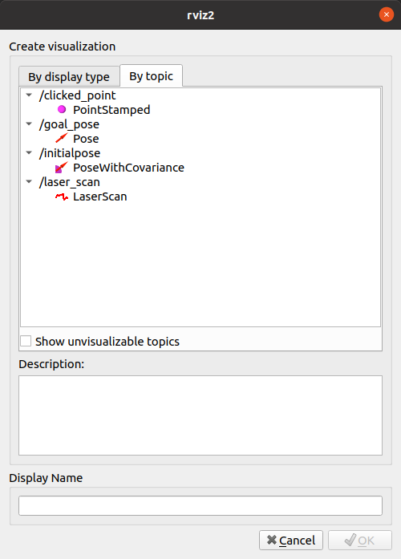

设置机器人仿真（Gazebo）。 [3628]
目标： 使用Gazebo和ROS 2启动仿真。 [3629]
任务 [3282]
1 启动模拟 [3635]
在这个演示中，您将在Gazebo中模拟一个简单的差动驱动机器人。您将使用Gazebo示例中定义的一个世界，名为 visualize_lidar.sdf。要运行此示例，请在终端中执行以下命令： [3636]
ign gazebo -v 4 -r visualize_lidar.sdf
当模拟正在运行时，您可以使用``ign``命令行工具检查Gazebo提供的主题： [3637]
ign topic -l
这将显示： [3638]
/clock
/gazebo/resource_paths
/gui/camera/pose
/gui/record_video/stats
/model/vehicle_blue/odometry
/model/vehicle_blue/tf
/stats
/world/visualize_lidar_world/clock
/world/visualize_lidar_world/dynamic_pose/info
/world/visualize_lidar_world/pose/info
/world/visualize_lidar_world/scene/deletion
/world/visualize_lidar_world/scene/info
/world/visualize_lidar_world/state
/world/visualize_lidar_world/stats
由于您尚未启动ROS 2节点，因此``ros2 topic list``命令的输出应该不包含任何机器人相关的主题: [3639]
2 配置ROS 2 [3640]
为了能够将我们的仿真与ROS 2通信，您需要使用一个名为``ros_gz_bridge``的软件包。该软件包提供了一个网络桥接器，可以在ROS 2和Gazebo Transport之间交换消息。您可以通过输入以下命令来安装该软件包: [3641]
sudo apt-get install ros-humble-ros-ign-bridge
此时，您可以启动一个从ROS到Gazebo的桥接器。具体来说，您将为主题``/model/vehicle_blue/cmd_vel``创建一个桥接器: [3642]
source /opt/ros/humble/setup.bash
ros2 run ros_gz_bridge parameter_bridge /model/vehicle_blue/cmd_vel@geometry_msgs/msg/Twist]ignition.msgs.Twist
有关``ros_gz_bridge``的更多详细信息，请查看此`README <https://github.com/gazebosim/ros_gz/tree/ros2/ros_gz_bridge>`__。 [3643]
一旦桥接程序运行，机器人就能够遵循您的电机命令。有两种选择： [3644]
使用``ros2 topic pub``向主题发送命令 [3645]
ros2 topic pub /model/vehicle_blue/cmd_vel geometry_msgs/Twist "linear: { x: 0.1 }"
sudo apt-get install ros-humble-teleop-twist-keyboard
teleop_twist_keyboard``发布Twist消息的默认主题是/cmd_vel``，但您可以重新映射此主题以使用桥接中使用的主题： [3647]source /opt/ros/humble/setup.bash ros2 run teleop_twist_keyboard teleop_twist_keyboard --ros-args -r /cmd_vel:=/model/vehicle_blue/cmd_vel将显示如下内容： [3648]
This node takes keypresses from the keyboard and publishes them as Twist messages. It works best with a US keyboard layout. --------------------------- Moving around: u i o j k l m , . For Holonomic mode (strafing), hold down the shift key: --------------------------- U I O J K L M < > t : up (+z) b : down (-z) anything else : stop q/z : increase/decrease max speeds by 10% w/x : increase/decrease only linear speed by 10% e/c : increase/decrease only angular speed by 10% CTRL-C to quit currently: speed 0.5 turn 1.0
3 在ROS 2中可视化激光雷达数据 [3649]
差动驱动机器人配备了激光雷达。要将Gazebo生成的数据发送到ROS 2，您需要启动另一个桥接程序。在本例中，激光雷达的数据提供在Gazebo传输主题``/lidar2``中，您将在桥接程序中重新映射该主题。该主题将在主题``/lidar_scan``下可用： [3650]
source /opt/ros/humble/setup.bash
ros2 run ros_gz_bridge parameter_bridge /lidar2@sensor_msgs/msg/LaserScan[ignition.msgs.LaserScan --ros-args -r /lidar2:=/laser_scan
要在ROS 2中可视化来自激光雷达的数据，您可以使用Rviz2： [3651]
source /opt/ros/humble/setup.bash
rviz2
然后，您需要配置“fixed frame”： [3652]
然后点击“Add”按钮，添加一个显示以可视化激光雷达： [3653]
现在您应该在Rviz2中看到来自激光雷达的数据： [3654]